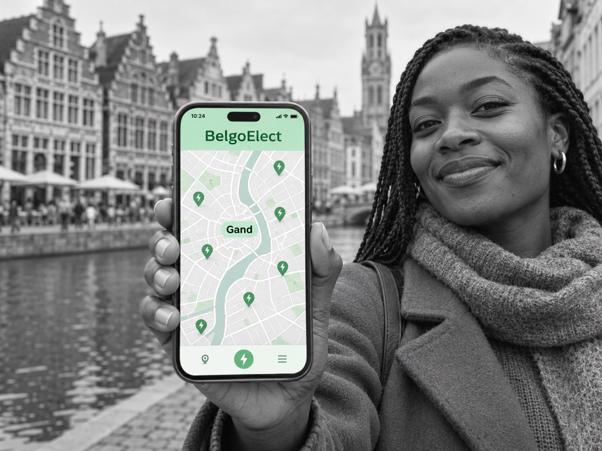
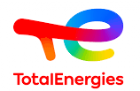
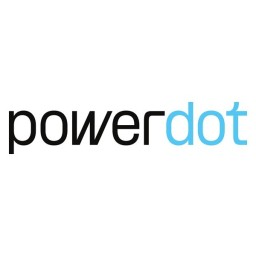
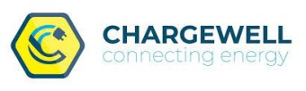
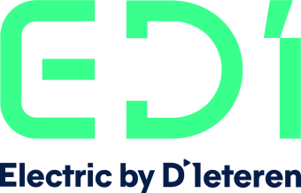

Android
Dans Chrome, ouvrez le menu ⋮ puis choisissez « Ajouter à l’écran d’accueil ».
Google PlayTéléchargement indisponible
BelgoElect sur mobile
Trouvez une prise compatible et préparez votre prochain arrêt depuis votre téléphone.

Sur Android comme sur iPhone, ouvrez le portail dans votre navigateur. Vous pouvez ensuite ajouter un raccourci à votre écran d’accueil.
Dans Chrome, ouvrez le menu ⋮ puis choisissez « Ajouter à l’écran d’accueil ».
Dans Safari, ouvrez le menu de partage puis choisissez « Sur l’écran d’accueil ».
Préparez un trajet de Bruges vers Gand, avec les quais du Graslei comme étape de visite.
Planifier Bruges–GandBelgoElect regroupe les données ouvertes sur les bornes de ces réseaux pour les afficher sur une seule carte.



